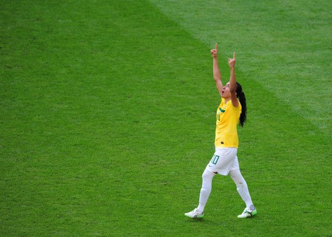

桑巴，伤疤
2011年7月11日凌晨2:15，2011年女足世界杯最后一场1/4决赛刚刚结束，美国队在点球大战中击败巴西队，晋级四强。
一般很少有人看女足比赛，但我只是因为心中从小留存的巴西情结——无论男足或女足，我都欣赏他们的表演，期待他们的胜利。从昨天23:30看到现在，我用心看完了整场比赛，的确太多波折起伏，太多变幻莫测。开场仅3分钟的自摆乌龙，让巴西队一直在被动中战斗着。直到下半场，玛塔挺身而出，创造了点球并导致对方后卫被红牌罚下，然后在重发中操刀命中（第一脚克里斯蒂安妮未中但因对方后卫违例判罚重罚）。尽管这一连串的判罚有些不那么令人信服，但这就是足球比赛，充斥着偶然性，一切皆有可能。于是比赛形势发生了戏剧性的逆转，巴西队渐渐找回了自信的感觉。我在大片观众的嘘声中期待着巴西的姑娘们能够再接再厉，坚持到底。果然，在加时赛刚开场，五届世界足球小姐玛塔再次不负众望，用一记匪夷所思的进球让我也兴奋不已了一次。虽然这个进球的有效性存在争议，但我就是支持巴西，没有道理，也盼着玛塔能够顶住压力，善始善终。

接下来的时间在提心吊胆中度过，默默祈祷着比赛早点结束。然而在比赛最后一分钟，奇迹发生了，顽强的美国队用一颗金子般的头球将比分扳平，把比赛拖入了残酷的点球大战。我在感到震惊的同时为巴西没能拿下即将到手的胜利而感到惋惜和紧张。观看点球的人和场上的队员一样忐忑，无奈地看着每次仅仅一瞬间之后双方队员的悲喜。最终，巴西队罚失一球，无奈落败。我看到了她们麻木的表情和落寞的背影，无话可说。原来这就是足球，欢笑和眼泪总在刹那之间，冰火两重天的感觉会如此真切。
虽说成王败寇，毫无疑问美国队的顽强和拼搏赢得了全场观众的掌声和尊敬，但巴西队会永远赢得我的喝彩和祝福。